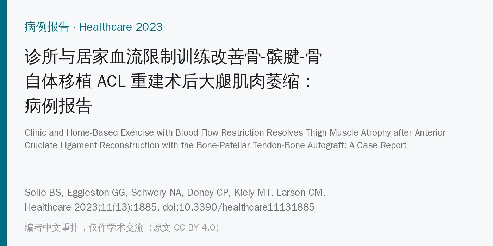
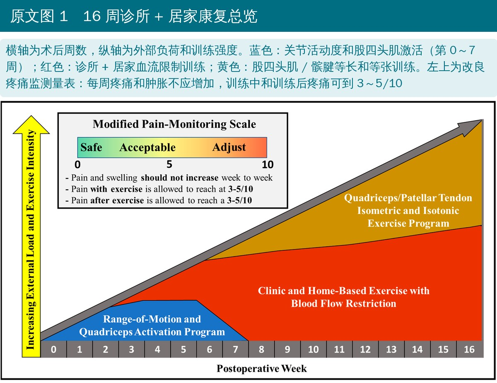
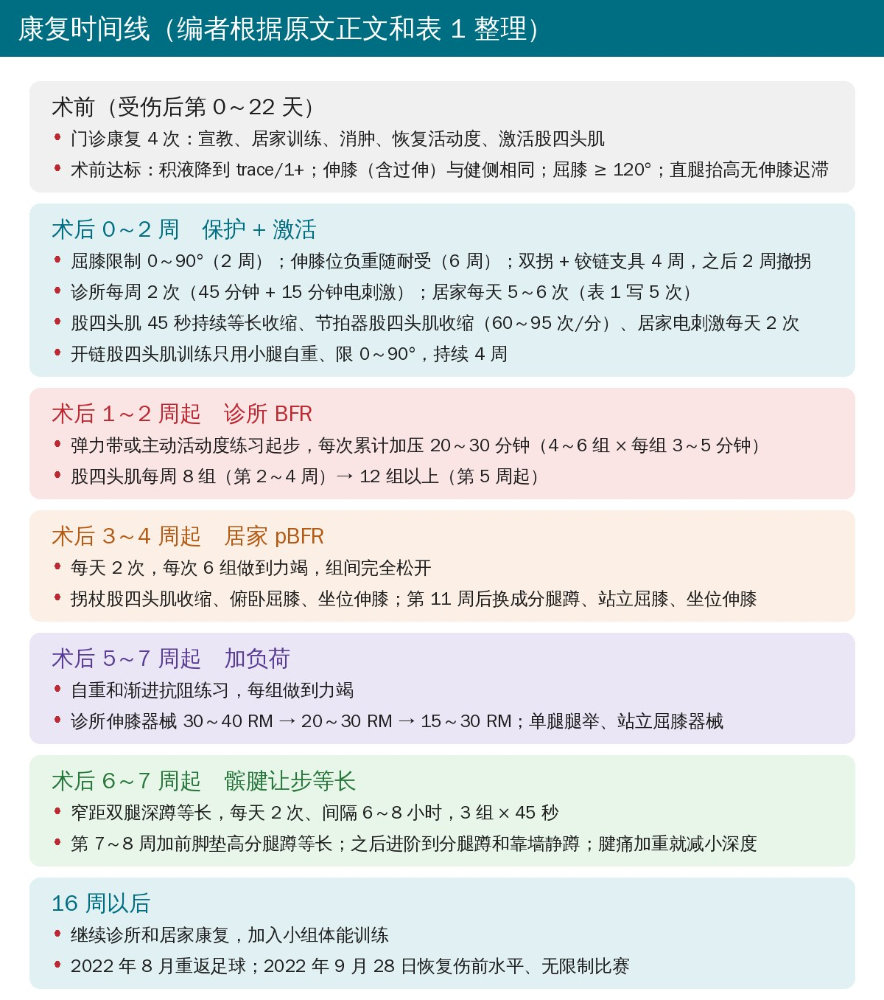
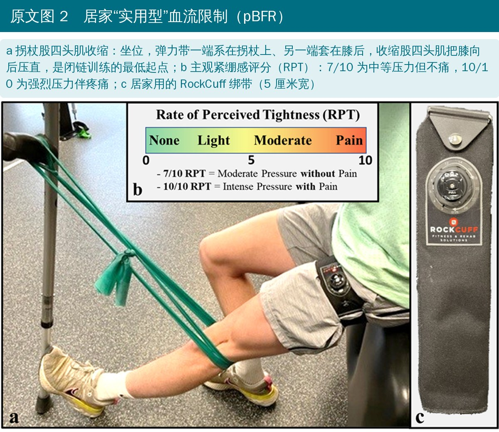
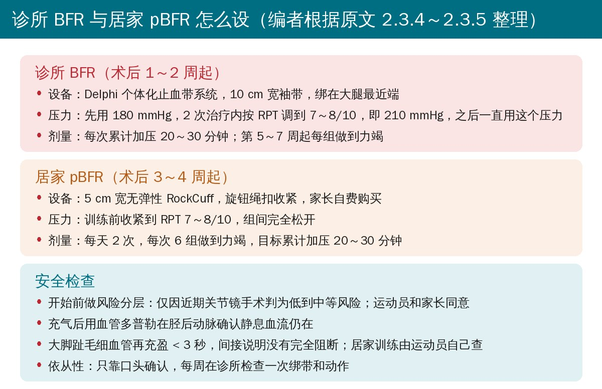
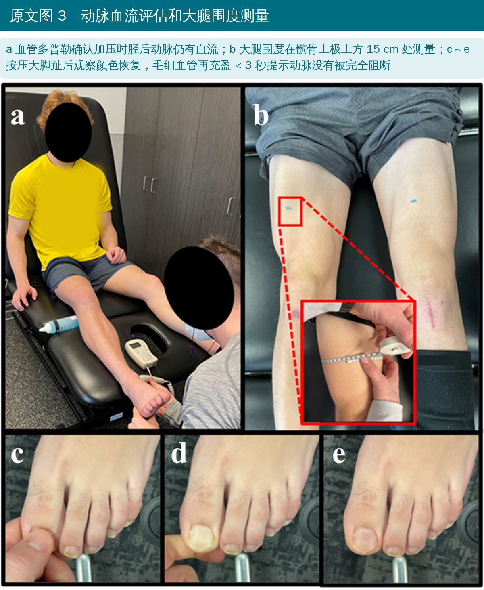
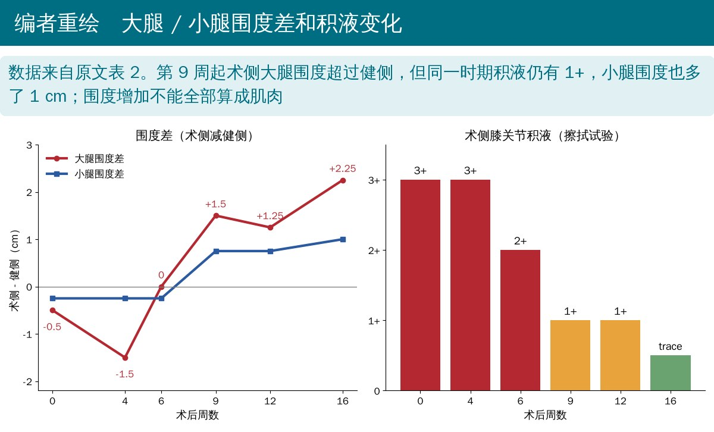
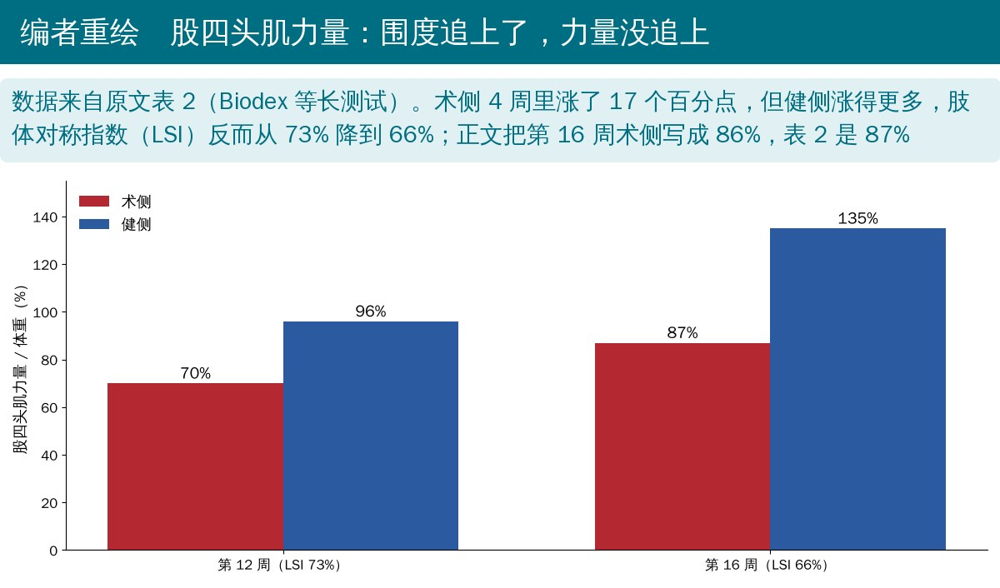
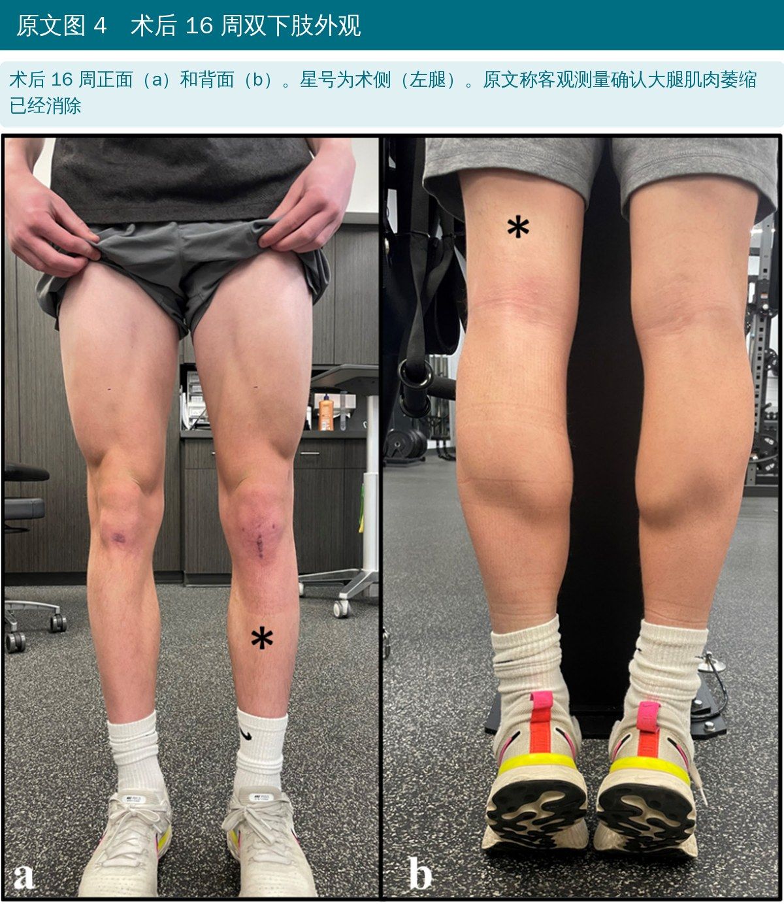
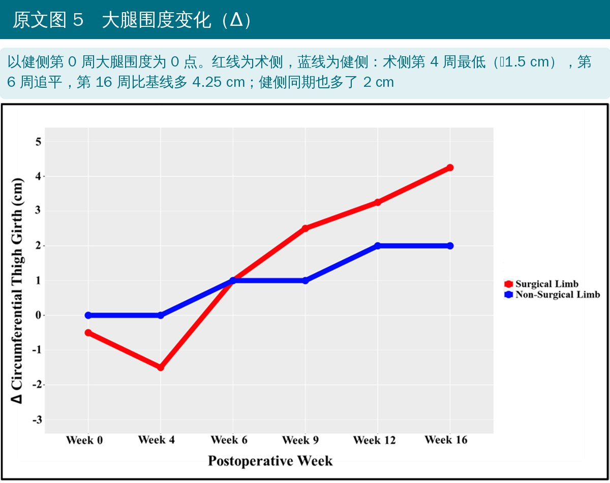

🔖原文信息（编者中文重排）
📚 文献信息
▪ Solie BS, Eggleston GG, Schwery NA, Doney CP, Kiely MT, Larson CM. Clinic and home-based exercise with blood flow restriction resolves thigh muscle atrophy after anterior cruciate ligament reconstruction with the bone-patellar tendon-bone autograft: a case report. Healthcare. 2023;11(13):1885. doi:10.3390/healthcare11131885
▪ 中文题目：诊所与居家血流限制训练改善骨-髌腱-骨自体移植 ACL 重建术后大腿肌肉萎缩：病例报告
▪ 作者来自美国明尼苏达州 Training HAUS 康复与运动表现中心、双城骨科（Twin Cities Orthopedics）
▪ 文章类型：单个病例报告（开放获取，CC BY 4.0）
ACL 重建术后，大腿肌肉萎缩最快 5～16 天就会出现，还可能拖到术后 9 个月以后。疼痛、积液、神经性肌肉抑制、活动度受限和制动都会推动分解代谢，股四头肌受影响最大。
• 血流限制（BFR）训练被认为安全有效，但各研究的处方参数差异很大，最佳做法还没有定论
• 一般建议 BFR 每周 2～3 次、强度 20%～40% 1RM；可术后前 6～12 周负荷往往不到 20% 1RM，有文献认为这时每天 1～2 次可能更有效
• 门诊通常每周 1～3 次，光靠诊所，前 2～3 个月 BFR 的暴露量可能不够
• 实用型血流限制（pBFR）用便宜的绑带，在家也能做，有研究显示效果和专业设备相近
这篇病例报告详细写出了一名 ACL 重建术后少年运动员诊所 BFR + 居家 pBFR的处方、进阶和安全检查方法。
• 15 岁男性足球运动员，2021 年 10 月比赛中躯干外侧被撞，左膝（非优势侧）受伤，听到“啪”一声，当时能负重
• 6 天后就诊：步态正常，被动伸膝差 4°，积液 2+，Lachman II-B 级，内外翻应力稳定，McMurray 内外侧都痛，后抽屉和 Dial 试验阴性
• MRI：ACL 完全断裂（Sherman II 型），内外侧半月板后角纵裂，都属于红-红区的稳定型撕裂
• 术前门诊康复 4 次，达到积液 trace/1+、伸膝与健侧相同、屈膝 ≥ 120°、直腿抬高无迟滞
• 受伤后第 22 天手术：10 mm 骨-髌腱-骨自体移植重建 ACL；全内缝合修复半月板，内侧 3 针、外侧 1 针
• 屈膝 0～90° 维持 2 周，之后逐渐到全范围
• 伸膝位负重随耐受 6 周；双拐 + 铰链支具 4 周，之后 2 周撤拐
• 3 个月内深蹲和弓步不超过屈膝 90°
• 开链股四头肌训练前 4 周只用小腿自重、限 0～90°，以利于移植物骨隧道愈合

🔖原文图 1（加中文说明）

🔖编者根据原文正文和表 1 整理
• 诊所每周 2 次、每次 45 分钟，最后加 15 分钟股四头肌电刺激
• 居家训练每天 5～6 次：股四头肌收缩、45 秒持续等长、坐位辅助滑足跟；节拍器提示股四头肌一收一放（60～95 次/分）；居家电刺激（Kneehab XP）每天 2 次
• “拐杖股四头肌收缩”是闭链训练的最低起点，随着积液和疼痛允许逐步加大弹力带阻力
• 全程用擦拭试验和作者改良的疼痛监测量表决定能不能进阶

🔖原文图 2（加中文说明）
• 先做风险分层：只因近期关节镜手术判为低到中等风险，运动员和家长同意后开始
• Delphi 个体化止血带系统，10 cm 宽袖带绑在大腿最近端；首次用 180 mmHg，2 次治疗内按主观紧绷感（RPT）调到 7～8/10，即 210 mmHg，之后一直用这个压力
• 每次目标累计加压 20～30 分钟（4～6 组，每组 3～5 分钟），先用轻弹力带或主动活动度练习
• 第 5～7 周起允许自重和渐进抗阻，每组做到主观力竭；股四头肌每周训练量从 8 组（第 2～4 周）加到 12 组以上（第 5 周起）
• 器械伸膝从 30～40 RM 开始，逐步到 20～30 RM、15～30 RM，后期加单腿腿举和站立屈膝器械
• 家长自费买了 5 cm 宽无弹性 RockCuff，绑在大腿最近端，用旋钮绳扣收紧
• 训练前收紧到 RPT 7～8/10，组间完全松开
• 首次在诊所教学时用血管多普勒确认 7～8/10 时仍是部分阻断
• 每天 2 次，每次 6 组做到力竭，目标累计加压 20～30 分钟；动作以主动活动度和自重为主：拐杖股四头肌收缩、俯卧屈膝、坐位伸膝，后期换成分腿蹲和站立屈膝
• 依从性只靠口头确认，每周在诊所检查一次绑带设置和动作

🔖编者根据原文 2.3.4～2.3.5 整理

🔖原文图 3（加中文说明；原文照片已遮挡面部）
• 因为取了髌腱做移植物，专门加了针对髌腱的让步（保持）等长训练来提高髌腱负荷能力
• 起点是窄距双腿深蹲等长：窄站距减少健侧代偿，更多负荷落在膝和伸膝装置上
• 每天 2 次、间隔 6～8 小时，每个动作 3 组 × 45 秒
• 第 7～8 周起第二次训练加前脚垫高分腿蹲等长 3 组；之后进阶到分腿蹲等长和靠墙静蹲；腱痛加重就减小深度
主要指标是大腿围度（髌骨上极上方 15 cm）、下肢瘦体重（InBody 770 多频生物电阻抗）和股四头肌力量（Biodex 等长测试，力量 / 体重和肢体对称指数 LSI）。还记录积液、小腿围度、活动度、直腿抬高迟滞和 KT-1000 松弛度。
• 大腿围度：术侧第 4 周最低，比健侧少 1.5 cm；第 6 周追平；第 16 周比健侧多 2.25 cm（52.25 cm vs 50 cm）
• 下肢瘦体重：第 16 周术侧 10.37 kg，健侧 10.02 kg
• 积液：3+（第 0、4 周）→ 2+（第 6 周）→ 1+（第 9、12 周）→ trace（第 16 周）
• 活动度：第 4 周屈膝到 125°，第 16 周 8-0-150，与健侧相同；直腿抬高迟滞第 4 周起消失
• 股四头肌力量：第 16 周术侧力量 / 体重 87%（正文写 86%），健侧 135%，LSI 66%，比第 12 周的 73% 还低
• KT-1000：术侧 4,5,6 mm，健侧 5,6,7 mm
• 回归：16 周后继续康复并加入小组体能训练，2022 年 8 月重返足球，2022 年 9 月 28 日恢复伤前水平、无限制比赛（术后约 10 个月）

🔖编者根据原文表 2 重绘

🔖编者根据原文表 2 重绘

🔖原文图 4（加中文说明）

🔖原文图 5（加中文说明）
• 安全：按个体调压力，加上风险分层、多普勒确认和患者自查毛细血管再充盈，不良事件风险很低；有研究显示 RPT 7/10 时所有受试者都是部分阻断
• 频率：居家 pBFR 负荷只有主动活动度和自重，强度不够，所以用每天 2 次的高频暴露来弥补，借“细胞肿胀”的合成 / 抗分解效应
• 优势侧：运动员右腿是优势腿，左腿本来就可能更细，所以第 4 周只差 1.5 cm 算轻度萎缩，第 16 周左腿瘦体重反而更多就更有意义
• 力量没追上：居家 pBFR 强度大概不足以提升力量；取髌腱后髌腱抗拉强度下降约 25%，骨-髌腱-骨移植后股四头肌无力本来就更常见
• 只有 1 个病例：没有对照，没有术前或伤前的围度基线，不能说明是 BFR 带来的效果
• 多种手段叠加：电刺激、节拍器激活、诊所 BFR、居家 pBFR、髌腱等长同时进行，作者也承认分不出 BFR 自己的作用
• “萎缩已消除”主要靠围度：卷尺围度会受积液和皮下组织影响，第 9～12 周积液仍有 1+；生物电阻抗也不如 DXA 或 MRI 肌肉横截面积准确
• 力量结果和标题不太一致：第 16 周 LSI 只有 66%，按常用的回归标准（≥ 90%）差得很远；“围度追上了”不等于功能恢复
• 压力设置不标准：没有测肢体阻断压（LOP），诊所用固定 210 mmHg，居家只靠 RPT；作者自己也列为局限
• 依从性只靠口头：每天 2 次 pBFR 实际做了多少，没有记录
• 值得借鉴的是方法：每天 2 次、组间松开、多普勒和毛细血管再充盈自查，这套居家 pBFR 的流程写得很细，可以直接参考
• 86% 还是 87%：结果部分写第 16 周术侧平均峰力矩 / 体重为 86%，表 2 是 87%；表注又写成“伸膝力量（kg）/ 体重（kg）”，力矩和公斤混用，单位不清楚
• 居家频率：正文写第 0～2 周居家训练“每天 5～6 次”，表 1 是第 0～1 周每天 5 次、第 1～2 周每天 4 次
• 健侧也在长：健侧大腿围度 16 周里从 48 cm 涨到 50 cm，力量从 96% 涨到 135%；把术侧和一直在变的健侧比，“超过健侧”的意义要打折扣
• 第 12 周反而回落：大腿围度差从第 9 周的 1.5 cm 降到第 12 周的 1.25 cm，原文没讨论
• 第 0 周不是基线：表 2 注明数据在每周开始时采集，第 0 周已经是术后，积液 3+，没有伤前或术前对照
• 引用不对等：Takarada 研究是术后单纯加压、不做运动；Tramer 研究是术前 2 周的 BFR，作者却拿它和本例术后 16 周的结果对比，认为“结果客观不同”
• 力量恢复反而增加再伤风险？：讨论说恢复股四头肌力量和对称性可能增加移植物再断裂风险，还推测股四头肌无力可以解释骨-髌腱-骨移植物存活更好；这和主流观点相反，证据也只是推测
• KT-1000 记录方式：“5,6,7”“4,5,6”没有说明是三个不同拉力还是三次测量
• 伦理：声明“病例报告不需要伦理审批”，但受试者是未成年人，有知情同意书
• 拼写：Otah（应为 Ohta）、Arpan Das and Bruce Patons（应为 Das 和 Paton）、torniquet（应为 tourniquet）
• 门诊一周两次不够，就把 BFR 带回家：术后早期负荷很轻，可以考虑每天 1～2 次的居家 pBFR 增加暴露量
• 居家 pBFR 先在诊所教会：第一次在诊所用多普勒确认 RPT 7～8/10 时仍有动脉血流；教会患者查大脚趾毛细血管再充盈 < 3 秒；组间完全松开
• 先筛风险：用 BFR 前做风险分层，未成年人要有家长同意
• 剂量参考：每次累计加压 20～30 分钟，每次约 6 组做到力竭；动作从拐杖股四头肌收缩、俯卧屈膝、坐位伸膝开始
• 取髌腱的要管髌腱：术后 6～7 周起可加窄距深蹲、分腿蹲、靠墙静蹲等长（3 × 45 秒，每天 2 次），腱痛加重就减深度
• 别只看卷尺：围度追上不代表力量追上；每次测围度同时记录积液，回归前一定要做股四头肌力量测试，LSI 要达到常用回归标准
表 1 诊所 + 居家康复方案（第 0～16 周，编者节选翻译）
| 周 | 诊所（每周 2 次） | 居家 |
|---|---|---|
| 0～1 | 股四头肌收缩 / 平板（45 秒）、拐杖股四头肌收缩、坐位辅助滑足跟、节拍器股四头肌收缩、电刺激 15 分钟 | 每天 5 次（诊所日 3～4 次）：同诊所动作；节拍器和电刺激每天 2 次 |
| 1～2 | 直腿抬高前收缩、俯卧股四头肌收缩 / 平板；BFR：拐杖股四头肌收缩、坐位滑足跟（各 2 组力竭） | 每天 4 次（诊所日 3 次）；电刺激每天 2 次（股四头肌收缩、直腿抬高各 5～10 分钟） |
| 2～3 | 俯卧股四头肌收缩 / 屈膝；BFR 加坐位伸膝（各 2 组力竭） | 每天 3 次（诊所日 2 次）；坐位伸膝 3 × 15 × 3 秒；电刺激每天 2 次 |
| 3～5 | 直腿抬高、仰卧滑足跟、伸膝位臀桥；BFR：拐杖股四头肌收缩、坐位滑足跟 / 俯卧屈膝、坐位伸膝 | 每天 2 次（诊所日 1 次）；开始 pBFR：拐杖股四头肌收缩、坐位滑足跟 / 俯卧屈膝、坐位伸膝（各 2 组力竭） |
| 5～6 | BFR：拐杖股四头肌收缩、站立屈膝、伸膝器械 30～40 RM（各 3 组力竭） | pBFR 同上 |
| 6～8 | 弹力带终末伸膝、弹力带深蹲、深蹲等长（屈膝 70°）、前脚垫高弓步等长；BFR：平衡板深蹲、站立屈膝、伸膝器械 30～40 → 20～30 RM | 同诊所等长动作（第 7～8 周加前脚垫高弓步等长）；pBFR 同上 |
| 8～11 | 弹力带分腿蹲、分腿蹲等长（屈膝 50°）、靠墙静蹲等长；BFR：平衡板深蹲 / 单腿腿举、站立屈膝器械、伸膝器械 20～30 RM | 同诊所等长动作；pBFR 同上 |
| 11～13 | 分腿蹲、分腿蹲等长（50°）、靠墙静蹲、手提哑铃弓步走（25 磅）；BFR：单腿腿举、站立屈膝器械 15～20 RM、伸膝器械 20～30 RM | 前脚垫高弓步等长、靠墙静蹲等长；pBFR 换成分腿蹲、站立屈膝、坐位伸膝 |
| 13～16 | 分腿蹲等长改为屈膝 70°；手提哑铃弓步走 25 → 35 磅；BFR：单腿腿举 15～20 RM、站立屈膝器械 10～15 RM、伸膝器械 15～30 RM | 同上 |
注：“力竭”指做到主观肌肉疲劳；等长训练每组 45 秒；股四头肌收缩每次保持 3 秒。
表 2 客观数据与结果
| 指标 | 第 0 周 | 第 4 周 | 第 6 周 | 第 9 周 | 第 12 周 | 第 16 周 |
|---|---|---|---|---|---|---|
| 积液（擦拭试验，术侧） | 3+ | 3+ | 2+ | 1+ | 1+ | trace |
| 大腿围度 术侧（cm） | 47.5 | 46.5 | 49 | 50.5 | 51.25 | 52.25 |
| 大腿围度 健侧（cm） | 48 | 48 | 49 | 49 | 50 | 50 |
| 大腿围度差（cm） | −0.5 | −1.5 | 0 | 1.5 | 1.25 | 2.25 |
| 小腿围度 术侧（cm） | 35 | 35 | 35 | 36 | 36.25 | 36.5 |
| 小腿围度 健侧（cm） | 35.25 | 35.25 | 35.25 | 35.5 | 35.5 | 35.5 |
| 小腿围度差（cm） | −0.25 | −0.25 | −0.25 | 0.75 | 0.75 | 1 |
| 活动度 术侧（°） | 5-0-30 | 5-0-125 | 5-0-130 | 5-0-130 | 8-0-145 | 8-0-150 |
| 活动度 健侧（°） | 8-0-150 | 8-0-150 | 8-0-150 | 8-0-150 | 8-0-150 | 8-0-150 |
| 直腿抬高迟滞（°） | 5 | 0 | 0 | 0 | 0 | 0 |
| 股四头肌力量 / 体重 术侧（%） | — | — | — | — | 70 | 87 |
| 股四头肌力量 / 体重 健侧（%） | — | — | — | — | 96 | 135 |
| LSI（%） | — | — | — | — | 73 | 66 |
| KT-1000 术侧（mm） | — | — | — | 5,6,7 | 4,5,6 | 4,5,6 |
| KT-1000 健侧（mm） | — | — | — | 5,6,7 | 5,6,7 | 5,6,7 |
| 下肢瘦体重 术侧 / 健侧（kg） | — | — | — | — | — | 10.37 / 10.02 |
注：数据在每周开始时采集；大腿围度在髌骨上极上方 15 cm 测量；小腿围度取小腿近端一半的最大值；瘦体重用 InBody 770 多频生物电阻抗测量。
欢迎关注骨科康复小黄公众号，获取更多物理治疗的专业知识！
📄参考文献：
Solie BS, Eggleston GG, Schwery NA, Doney CP, Kiely MT, Larson CM. Clinic and home-based exercise with blood flow restriction resolves thigh muscle atrophy after anterior cruciate ligament reconstruction with the bone-patellar tendon-bone autograft: a case report. Healthcare. 2023;11(13):1885. doi:10.3390/healthcare11131885
本文为中文解读，仅作学术交流：图片引自原文图 1～图 5（编者加中文说明，面部遮挡为原文所有），时间线卡、BFR 参数卡和两张数据图为编者根据原文正文、表 1 和表 2 整理，表格为编者翻译。原文以 CC BY 4.0 许可发表。